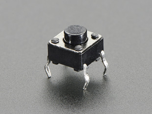
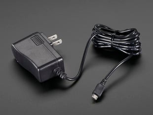
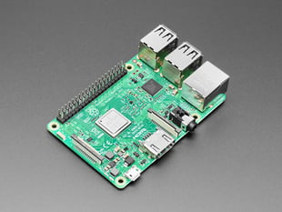
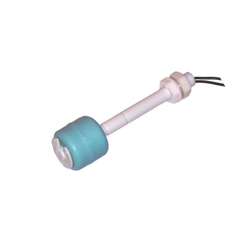
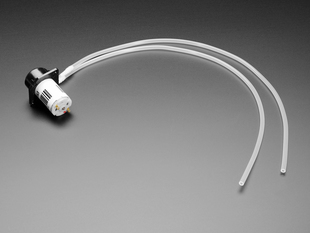
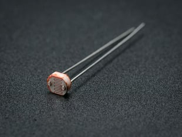

← Back to the explorer
Meet the parts
Six parts stand in for the kids' buoy idea, plus one safety add. Meet each part and see what it does.
Photos show example tabletop parts, not a finished outdoor buoy.
Antenna & transmitter

Get the heavy-rain message from the weather network.
The kids put an antenna on top that connects to the weather network, plus a transmitter that passes the message to the CPU. A forecast is a prediction, not a measurement. For our tabletop idea, pressing a button pretends that a heavy-rain message has arrived.
LEGO: Hold the LEGO Hub's left button to pretend that a heavy-rain message has arrived. It stands in for the kids' antenna and transmitter.
Included in shared $12–18 wiring/button kit.
What the program does
heavy_rain = forecast.is_pressed
- Forever
- Set rain to left button pressed?
Words
- Transmitter
- A part that sends radio messages. The kids planned one to pass the forecast to the CPU.
- GPIO
- General-purpose input/output. Small connection pins on the Pi. They let it hear from a button or send a signal to another part.
Example forecast button photo: Adafruit
Solar & battery

Sunlight charges the battery that powers the parts.
The kids put solar panels on top of the buoy to charge a battery inside. The battery powers the transmitter, the small CPU, the water filter, and the antenna. The tabletop Pi and pump use separate plug-in supplies; this photo shows the optional Pi adapter.
LEGO: The LEGO Hub has a rechargeable battery. It powers the Hub, its sensors, and its motor. The model solar panel is just for showing the kids' idea.
Pump supply + adapter: $13.25. Outdoor solar/enclosure excluded.
What the program does
# Power comes from hardware, not code.
# Outdoor solar is conceptual.
# Prototype: separate Pi and pump supplies.
- Hardware connection, no programming block
- Hub battery supplies sensors and motor
Words
- SPIKE
- The name of a LEGO robotics kit. Its Hub is a small computer that connects to LEGO sensors and motors.
Example Pi power adapter photo: Adafruit
Small CPU

Read the sensors and decide when to release the treatment.
The Raspberry Pi is the kids' small CPU for our model. It reads the inputs and decides when the pump should run; in the kids' plan, the CPU would open the valve and mix the water instead. It remembers when a rain or cloudy-water event has already used its turn.
LEGO: The LEGO Hub is the model's small computer. It follows the same rules using LEGO sensors and a motor.
Raspberry Pi and LEGO hub already owned: $0 additional.
What the program does
event = heavy_rain or cloudy
if stop_at is not None:
if not tank_ok or not run_held or now >= stop_at:
stop_at = None
elif not event:
event_used = False
elif tank_ok and run_held and not event_used:
event_used = True
stop_at = now + 2
pump.value = stop_at is not None
- Forever: read rain, cloudy, tank OK and Run
- If running: stop motor C if tank low OR Run released OR timer ≥ 2; set running false
- Else if neither rain nor cloudy: set used false
- Else if tank OK AND Run AND NOT used
- Set used true; reset timer; start motor C; set running true
Words
- Python
- A programming language. A way to write instructions for a computer. The code examples use it.
- GPIO
- General-purpose input/output. Small connection pins on the Pi. They let it hear from a button or send a signal to another part.
- Pulse
- A short burst. Here, the pump runs for up to two seconds, then stops.
Raspberry Pi 3 photo: Adafruit
Run button (safety extra)
Hold to allow pumping. Let go to stop.
This button is not in the kids' plan; it is our classroom safety rule. The pump may run only while someone holds it. Letting go tells the computer to stop the pump at its next check. A rain or cloudy-water signal is still needed to start.
LEGO: Hold the LEGO Hub's right button to allow the motor to run. Letting go tells it to stop.
Included in shared $12–18 wiring/button kit.
What the program does
run_held = run_button.is_pressed
if not run_held:
pump.off()
- Forever
- If NOT right button pressed
- Stop motor C; set running false
Words
- GPIO
- General-purpose input/output. Small connection pins on the Pi. They let it hear from a button or send a signal to another part.
Example hold-to-run button photo: Adafruit
Two tanks & one-way valve

Hold the treatment water and check the level.
The kids planned two tanks: one holds a sodium peroxyhydrate solution that can kill algae, and the other holds water behind a one-way valve. When heavy rain is forecast, the CPU opens the valve and mixes the water. Our cups hold the demo water, and the float switch checks that there is enough to pump: a float rides on top of the water like a tiny boat, and as it drops it tells the computer to stop.
LEGO: A distance sensor measures how far away a dry marker is. Moving the marker farther away pretends that the tank is low. No water goes near the LEGO sensor.
Float: $7.99; cups/craft supplies: $4–8 shared.
What the program does
tank_ok = float_switch.is_pressed
if not tank_ok:
pump.off()
- Forever
- Set tank OK to valid distance on B below cutoff
- If NOT tank OK: stop motor C; set running false
Words
- Valve
- A gate for flow. The kids planned a one-way valve so the mix goes out and cannot flow back.
- Port
- A plug-in connection. A, B, and C name sockets on the LEGO Hub, like labels on doors.
Float switch photo: AceCrew
Pump & sprayer

Send the mixed water out over the surface.
The kids' water tank leads to a sprayer on the side that sprays the mix on top of the water. Our tabletop pump squeezes a soft tube to push water along, a little like squeezing toothpaste, and moves food-colored water into a cup. A separate electronic switch lets the computer turn it on and off.
LEGO: A LEGO motor spins a wheel or flag to show when the sprayer would run. It is a dry stand-in for moving water.
Pump: $24.95; driver + cable: $5.20. LEGO motor already owned.
What the program does
# Repeat while checking the inputs.
if stop_at is not None:
if not tank_ok or not run_held or now >= stop_at:
stop_at = None
pump.value = stop_at is not None
- When controller starts a new pulse
- Start motor C; reset timer; set running true
- Forever: while running, keep checking inputs
- If tank low OR Run released OR timer ≥ 2
- Stop motor C; set running false
Words
- MOSFET
- Metal-oxide-semiconductor field-effect transistor. A tiny electronic switch. It lets the Pi turn the pump's separate power supply on or off.
- Sprayer
- A spray head that spreads water on top. The kids planned one on the side of the buoy.
- Pulse
- A short burst. Here, the pump runs for up to two seconds, then stops.
- Port
- A plug-in connection. A, B, and C name sockets on the LEGO Hub, like labels on doors.
Pump with soft tubing photo: Adafruit
Water sensor

Watch the water for an algae overabundance.
The kids put a sensor on the bottom of the buoy to watch for an overabundance of algae. Our tabletop stand-in shines a tiny light through a water sample and measures how much gets through. Cloudy water blocks more light, but sediment can also block it, so cloudiness alone does not tell us whether algae caused it.
LEGO: The LEGO Color Sensor measures light bouncing off a card. A light card stands for clear water; a dark card stands for cloudy water. Keep the card the same distance away.
MCP3008 + photoresistor: $5.45; LED/resistors in shared kit.
What the program does
light = sensor.value
cloudy = light < calibrated_cutoff
- Forever
- Set cloudy to reflected light on A below cutoff
Words
- LED
- Light-emitting diode. A tiny light. We shine one through the water sample.
- Photoresistor
- A light-sensing part. Its electrical resistance changes when the light changes. We use that to measure how much light gets through.
- ADC
- Analog-to-digital converter. A helper chip that turns an electrical reading into a number the computer can use.
- MCP3008
- A chip model name, not an acronym. This is the ADC chip used in our example. Think of it as a translator for the light sensor.
Photoresistor photo: Adafruit
Word helper: what do these letters mean?
- GPIO
- General-purpose input/output. Small connection pins on the Pi. They let it hear from a button or send a signal to another part.
- LED
- Light-emitting diode. A tiny light. We shine one through the water sample.
- ADC
- Analog-to-digital converter. A helper chip that turns an electrical reading into a number the computer can use.
- MCP3008
- A chip model name, not an acronym. This is the ADC chip used in our example. Think of it as a translator for the light sensor.
- MOSFET
- Metal-oxide-semiconductor field-effect transistor. A tiny electronic switch. It lets the Pi turn the pump's separate power supply on or off.
- Python
- A programming language. A way to write instructions for a computer. The code examples use it.
- SPIKE
- The name of a LEGO robotics kit. Its Hub is a small computer that connects to LEGO sensors and motors.
- Port
- A plug-in connection. A, B, and C name sockets on the LEGO Hub, like labels on doors.
- Pulse
- A short burst. Here, the pump runs for up to two seconds, then stops.
- Photoresistor
- A light-sensing part. Its electrical resistance changes when the light changes. We use that to measure how much light gets through.
- Resistor
- A part that limits electric current. It helps control how much electricity flows through a circuit.
- microSD
- A small Secure Digital memory card. It stores the Pi's software and our program, like a tiny bookshelf for computer files.
- USD
- United States dollars. The currency used for the prices below.
- OR / AND / NOT
- Words that help code make choices. OR means either condition can be true. AND means both must be true. NOT means the opposite.
- Transmitter
- A part that sends radio messages. The kids planned one to pass the forecast to the CPU.
- Valve
- A gate for flow. The kids planned a one-way valve so the mix goes out and cannot flow back.
- Sprayer
- A spray head that spreads water on top. The kids planned one on the side of the buoy.